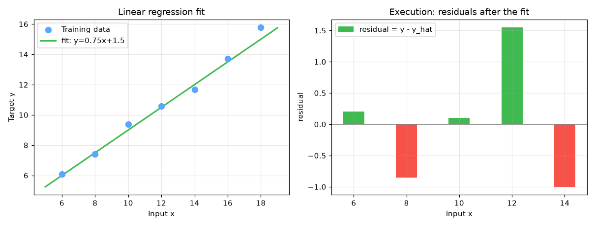

Linear Regression — AI engineering example · part of the MLOps monorepo
This example is grounded in Linear Regression. The equations below drive every forward and backward pass in the implementation.
Starting from the hypothesis $h(x) = wx + b$, we minimize the MSE loss. Taking partial derivatives w.r.t. $w$ and $b$ and applying gradient descent yields the update rules. The learning rate $\alpha$ controls step size; too large causes divergence, too small causes slow convergence.
Concrete forward-pass / update evaluation using the algorithm's own equations:
A step-by-step, intuitive explanation with concrete data so the formal equations above become clear:
Run this self-contained snippet in a Python shell to watch every step execute and print its value:
import numpy as np
# Data: pizza diameter (in) and price ($)
x = np.array([6,8,10,12,14.], float)
y = np.array([7,9,13,17.5,18.], float)
# --- 1) CLOSED FORM: exact least-squares fit of the line y = w*x + b ---
xm, ym = x.mean(), y.mean() # center the data around its mean
w = ((x-xm)*(y-ym)).sum() / ((x-xm)**2).sum() # slope = cov(x,y) / var(x)
b = ym - w*xm # intercept so the line hits (xm,ym)
print("closed-form: w=%.3f b=%.3f" % (w, b)) # -> 1.525, -2.350
print("predict x=12 ->", round(w*12 + b, 2)) # plug a 12-in diameter into the line
# --- 2) ONE GRADIENT-DESCENT STEP: shows the update rule actually running ---
w2, b2, lr, n = 0.0, 0.0, 0.005, len(x) # start at zero, pick a small lr
e = w2*x + b2 - y # prediction error e = y_hat - y
dw = (2/n)*np.sum(x*e); db = (2/n)*np.sum(e) # gradients of MSE wrt w and b
w2 -= lr*dw; b2 -= lr*db # take one step downhill
print("after 1 GD step from 0: w=%.3f b=%.3f" % (w2, b2))
Plots of the execution above — left: the concept; right: the step-by-step computation visualised. Interactive scatter plot with regression line, showing loss descent over iterations.
The example follows a consistent data → train → evaluate → serve pipeline. Inputs are loaded and validated, transformed by the core algorithm, scored against held-out data, and exposed through a REST API.
| Class | Public methods | Responsibility |
|---|---|---|
PredictRequest | — | Single pizza price prediction request. |
PredictBulkRequest | — | Bulk pizza price prediction request. |
PredictResponse | — | Prediction response. |
BulkPredictResponse | — | Bulk prediction response. |
DriftResponse | — | Drift detection response. |
LinearRegression | predict, fit, mse, rmse, r2_score, mae, evaluate, save, load, to_dict | Linear regression: price = weight * diameter + bias, trained via MSE gradient descent. |
data.py reads the source dataset and splits train/test.model.py applies the mathematics from Section 1.api.py exposes prediction endpoints with drift detection.Key design choices in this module: a pure-NumPy implementation (no PyTorch/TensorFlow), schema validation via ai_core.validation, structured JSON logging through ai_core.logging, Prometheus metrics from ai_core.metrics, and MLflow/model-registry persistence via ai_core.model_registry. The FastAPI service wraps the trained model with observability middleware from ai_core.fastapi_middleware.
The most important behaviour is summarised below; full source for each module is collapsible so the page stays readable while remaining self-contained.
LinearRegression.predict(X)Forward pass: y_hat = w * x + b.
LinearRegression.fit(X, y)Train using gradient descent on Mean Squared Error.
LinearRegression.evaluate(X, y)Compute all evaluation metrics.
"""Linear Regression model for pizza price prediction.
Implements a production-ready linear regression with:
- Gradient descent training
- R² score computation
- Feature scaling
- Proper serialization with metadata
"""
from dataclasses import dataclass, field
import numpy as np
@dataclass
class LinearRegression:
"""Linear regression: price = weight * diameter + bias, trained via MSE gradient descent."""
learning_rate: float = 0.001
n_iterations: int = 2000
weight: float = 0.0
bias: float = 0.0
loss_history: list[float] = field(default_factory=list)
def predict(self, X: np.ndarray) -> np.ndarray:
"""Forward pass: y_hat = w * x + b."""
return self.weight * X + self.bias
def fit(self, X: np.ndarray, y: np.ndarray) -> "LinearRegression":
"""Train using gradient descent on Mean Squared Error."""
n = len(X)
self.loss_history = []
for _ in range(self.n_iterations):
y_pred = self.predict(X)
loss = np.mean((y_pred - y) ** 2)
self.loss_history.append(float(loss))
dw = (2 / n) * np.sum(X * (y_pred - y))
db = (2 / n) * np.sum(y_pred - y)
self.weight -= self.learning_rate * dw
self.bias -= self.learning_rate * db
return self
# ---------- Metrics ----------
def mse(self, X: np.ndarray, y: np.ndarray) -> float:
"""Compute Mean Squared Error on given data."""
return float(np.mean((self.predict(X) - y) ** 2))
def rmse(self, X: np.ndarray, y: np.ndarray) -> float:
"""Compute Root Mean Squared Error."""
return float(np.sqrt(self.mse(X, y)))
def r2_score(self, X: np.ndarray, y: np.ndarray) -> float:
"""Compute R² (coefficient of determination) score."""
y_pred = self.predict(X)
ss_res = np.sum((y - y_pred) ** 2)
ss_tot = np.sum((y - np.mean(y)) ** 2)
if ss_tot == 0:
return 1.0 if ss_res == 0 else 0.0
return float(1 - ss_res / ss_tot)
def mae(self, X: np.ndarray, y: np.ndarray) -> float:
"""Compute Mean Absolute Error."""
return float(np.mean(np.abs(self.predict(X) - y)))
def evaluate(self, X: np.ndarray, y: np.ndarray) -> dict[str, float]:
"""Compute all evaluation metrics."""
return {
"mse": self.mse(X, y),
"rmse": self.rmse(X, y),
"mae": self.mae(X, y),
"r2": self.r2_score(X, y),
}
# ---------- Serialization ----------
def save(self, path: str) -> None:
"""Save model parameters to disk."""
np.savez(
path,
weight=self.weight,
bias=self.bias,
learning_rate=self.learning_rate,
n_iterations=self.n_iterations,
loss_history=np.array(self.loss_history),
)
@classmethod
def load(cls, path: str) -> "LinearRegression":
"""Load model parameters from disk."""
data = np.load(path)
model = cls(
learning_rate=float(data["learning_rate"]),
n_iterations=int(data["n_iterations"]),
)
model.weight = float(data["weight"])
model.bias = float(data["bias"])
model.loss_history = list(data["loss_history"])
return model
def to_dict(self) -> dict[str, float]:
"""Return model parameters as a dict."""
return {
"weight": self.weight,
"bias": self.bias,
"learning_rate": self.learning_rate,
"n_iterations": self.n_iterations,
}"""Production training pipeline for pizza price prediction."""
import argparse
import os
from pathlib import Path
import numpy as np
from ai_core.logging import get_logger, setup_logging
from ai_core.model_registry import ModelRegistry
from ai_core.validation import DataValidator, create_pizza_schema
from pizza_price.data import load_training_data, save_training_data, train_test_split
from pizza_price.model import LinearRegression
logger = get_logger(__name__)
def train(
model_dir: Path,
data_path: Path,
learning_rate: float,
n_iterations: int,
model_version: str,
register_to_mlflow: bool = False,
test_size: float = 0.2,
random_seed: int = 42,
) -> dict:
"""Train the pizza price model and save artifacts."""
# Load training data
X, y = load_training_data(data_path)
logger.info("Loaded training data", n_samples=len(X), data_path=str(data_path))
# Validate training data
validator = DataValidator(create_pizza_schema())
validation = validator.validate(X, y)
if not validation.valid:
logger.error("Training data validation failed", errors=validation.errors)
raise ValueError(f"Training data validation failed: {validation.errors}")
logger.info("Training data validated", stats=validation.stats)
# Split train/test
X_train, X_test, y_train, y_test = train_test_split(
X, y, test_size=test_size, random_seed=random_seed
)
logger.info(
"Data split",
n_train=len(X_train),
n_test=len(X_test),
test_size=test_size,
random_seed=random_seed,
)
# Save training data for reproducibility
save_training_data(X, y, model_dir / "training_data.csv")
# Train model
model = LinearRegression(learning_rate=learning_rate, n_iterations=n_iterations)
model.fit(X_train, y_train)
# Evaluate on train and test
train_metrics = model.evaluate(X_train, y_train)
test_metrics = model.evaluate(X_test, y_test)
logger.info(
"Training complete",
weight=model.weight,
bias=model.bias,
train_metrics=train_metrics,
test_metrics=test_metrics,
iterations=n_iterations,
)
# Model validation - check metrics meet thresholds
if test_metrics["rmse"] > 5.0:
logger.warning("Model RMSE above threshold", rmse=test_metrics["rmse"], threshold=5.0)
# Save model
model_path = model_dir / f"pizza_model_v{model_version}.npz"
model.save(str(model_path))
# Save training chart
_save_chart(model, X, y, model_dir, model_version)
# Combined metrics for registry
metrics = {
"mse": test_metrics["mse"],
"rmse": test_metrics["rmse"],
"mae": test_metrics["mae"],
"r2": test_metrics["r2"],
"train_mse": train_metrics["mse"],
"train_r2": train_metrics["r2"],
"weight": model.weight,
"bias": model.bias,
"n_samples": len(X),
"n_train": len(X_train),
"n_test": len(X_test),
}
# Register model
registry = ModelRegistry(base_dir=model_dir)
registry.save_model(
model_name="pizza-price",
model_version=model_version,
model_type="regression",
metrics=metrics,
parameters={
"learning_rate": learning_rate,
"n_iterations": n_iterations,
"random_seed": random_seed,
},
artifacts={
f"pizza_model_v{model_version}.npz": model_path,
"training_data.csv": model_dir / "training_data.csv",
},
tags={"framework": "numpy", "task": "regression"},
)
if register_to_mlflow:
registry.log_to_mlflow(
model_name="pizza-price",
model_version=model_version,
metrics=metrics,
params={
"learning_rate": learning_rate,
"n_iterations": n_iterations,
"random_seed": random_seed,
},
artifacts={
"model": str(model_path),
"chart": str(model_dir / f"pizza_regression_v{model_version}.png"),
"training_data": str(model_dir / "training_data.csv"),
},
tags={"model_type": "regression", "framework": "numpy"},
)
logger.info("Registered model to MLflow", model="pizza-price", version=model_version)
return metrics
def _save_chart(
model: LinearRegression, X: np.ndarray, y: np.ndarray, output_dir: Path, version: str
) -> None:
"""Save the regression chart."""
import matplotlib
matplotlib.use("Agg")
import matplotlib.pyplot as plt
plt.figure(figsize=(10, 6))
plt.scatter(X, y, color="blue", s=100, label="Training data")
line_x = np.linspace(min(X) - 1, max(X) + 1, 100)
line_y = model.predict(line_x)
plt.plot(line_x, line_y, color="red", linewidth=2, label="Fitted line")
plt.xlabel("Pizza Diameter (inches)")
plt.ylabel("Price (USD)")
plt.title(f"Pizza Price vs Diameter - Trained Model v{version}")
plt.grid(True, alpha=0.3)
plt.legend()
chart_path = output_dir / f"pizza_regression_v{version}.png"
plt.tight_layout()
plt.savefig(str(chart_path), dpi=100)
plt.close()
logger.info("Chart saved", path=str(chart_path))
def main():
parser = argparse.ArgumentParser(description="Train pizza price prediction model")
parser.add_argument("--model-dir", type=Path, default=Path(os.getenv("MODEL_DIR", "/models")))
parser.add_argument("--data-path", type=Path, default=None)
parser.add_argument(
"--learning-rate", type=float, default=float(os.getenv("LEARNING_RATE", "0.001"))
)
parser.add_argument("--n-iterations", type=int, default=int(os.getenv("N_ITERATIONS", "2000")))
parser.add_argument("--model-version", type=str, default=os.getenv("MODEL_VERSION", "1.0.0"))
parser.add_argument("--test-size", type=float, default=float(os.getenv("TEST_SIZE", "0.2")))
parser.add_argument("--random-seed", type=int, default=int(os.getenv("RANDOM_SEED", "42")))
parser.add_argument(
"--register-mlflow",
action="store_true",
default=os.getenv("REGISTER_MLFLOW", "false").lower() == "true",
)
parser.add_argument("--log-level", type=str, default=os.getenv("LOG_LEVEL", "INFO"))
args = parser.parse_args()
setup_logging(args.log_level)
args.model_dir.mkdir(parents=True, exist_ok=True)
metrics = train(
model_dir=args.model_dir,
data_path=args.data_path,
learning_rate=args.learning_rate,
n_iterations=args.n_iterations,
model_version=args.model_version,
register_to_mlflow=args.register_mlflow,
test_size=args.test_size,
random_seed=args.random_seed,
)
logger.info("Training finished", metrics=metrics, model_dir=str(args.model_dir))
if __name__ == "__main__":
main()"""Data loading and preprocessing for pizza price prediction."""
from pathlib import Path
import numpy as np
import pandas as pd
def load_training_data(data_path: Path | None = None) -> tuple[np.ndarray, np.ndarray]:
"""Load pizza training data from CSV or use built-in dataset.
Expected CSV format:
diameter,price
6,7.0
8,9.0
...
"""
if data_path and Path(data_path).exists():
df = pd.read_csv(data_path)
X = df["diameter"].values.astype(float)
y = df["price"].values.astype(float)
return X, y
# Built-in training data
X = np.array([6, 8, 10, 14, 18], dtype=float)
y = np.array([7.0, 9.0, 13.0, 17.5, 18.0], dtype=float)
return X, y
def train_test_split(
X: np.ndarray, y: np.ndarray, test_size: float = 0.2, random_seed: int | None = None
) -> tuple[np.ndarray, np.ndarray, np.ndarray, np.ndarray]:
"""Split data into train and test sets."""
n = len(X)
n_test = max(1, int(n * test_size))
if random_seed is not None:
rng = np.random.default_rng(random_seed)
indices = rng.permutation(n)
else:
indices = np.random.permutation(n)
test_idx = indices[:n_test]
train_idx = indices[n_test:]
return X[train_idx], X[test_idx], y[train_idx], y[test_idx]
def save_training_data(X: np.ndarray, y: np.ndarray, path: Path) -> None:
"""Save training data to CSV for reproducibility."""
path = Path(path)
path.parent.mkdir(parents=True, exist_ok=True)
df = pd.DataFrame({"diameter": X, "price": y})
df.to_csv(path, index=False)"""Production serving API for pizza price prediction."""
import os
import time
from contextlib import asynccontextmanager
from pathlib import Path
import numpy as np
from ai_core.drift import DriftDetector
from ai_core.fastapi_middleware import add_observability_middleware
from ai_core.logging import get_logger, setup_logging
from ai_core.metrics import MetricsCollector
from ai_core.model_registry import ModelRegistry
from ai_core.validation import DataValidator, create_pizza_schema
from fastapi import FastAPI, HTTPException, Response
from pydantic import BaseModel, Field
from pizza_price.model import LinearRegression
logger = get_logger(__name__)
# Configuration
MODEL_DIR = Path(os.getenv("MODEL_DIR", "/models"))
MODEL_VERSION = os.getenv("MODEL_VERSION", "latest")
METRICS_PORT = int(os.getenv("METRICS_PORT", os.getenv("PIZZA_METRICS_PORT", "8001")))
DRIFT_THRESHOLD = float(os.getenv("DRIFT_THRESHOLD", "0.2"))
class PredictRequest(BaseModel):
"""Single pizza price prediction request."""
diameter: float = Field(..., gt=0, le=50, description="Pizza diameter in inches")
class PredictBulkRequest(BaseModel):
"""Bulk pizza price prediction request."""
diameters: list[float] = Field(..., min_length=1, max_length=100)
class PredictResponse(BaseModel):
"""Prediction response."""
diameter: float
predicted_price: float
equation: str
model_version: str
class BulkPredictResponse(BaseModel):
"""Bulk prediction response."""
predictions: list[PredictResponse]
model_version: str
class DriftResponse(BaseModel):
"""Drift detection response."""
total_features: int
drifted_features: int
drift_ratio: float
drifted: list[dict]
all_results: list[dict]
# Global model state
_model: LinearRegression | None = None
_model_version: str = "unknown"
_metrics: MetricsCollector | None = None
_validator: DataValidator | None = None
_drift_detector: DriftDetector | None = None
_reference_data: np.ndarray | None = None
_recent_predictions: list[float] = []
@asynccontextmanager
async def lifespan(app: FastAPI):
"""Load model at startup and clean up at shutdown."""
global _model, _model_version, _metrics, _validator, _drift_detector, _reference_data
setup_logging(os.getenv("LOG_LEVEL", "INFO"))
_metrics = MetricsCollector("pizza_price", port=METRICS_PORT)
app.state.metrics = _metrics
_validator = DataValidator(create_pizza_schema())
_drift_detector = DriftDetector(
feature_names=["diameter"],
feature_types={"diameter": "float"},
psi_threshold=DRIFT_THRESHOLD,
)
_model, _model_version = _load_model()
_metrics.set_model_version(_model_version)
_metrics.set_model_info(
model_name="pizza-price", model_version=_model_version, model_type="regression"
)
# Load reference data for drift detection
_reference_data = _load_reference_data()
logger.info("Model loaded", model="pizza-price", version=_model_version)
yield
logger.info("Shutting down pizza-price API")
def _load_model() -> tuple[LinearRegression, str]:
"""Load the latest model from the registry or model directory with resilient fallback."""
# 1. Try model registry
registry = ModelRegistry(base_dir=MODEL_DIR)
try:
if MODEL_VERSION == "latest":
models = registry.list_models()
pizza_models = [m for m in models if m.get("model_name") == "pizza-price"]
if pizza_models:
pizza_models.sort(key=lambda m: m["model_version"], reverse=True)
latest = pizza_models[0]
model_dir = Path(latest["artifact_path"])
npz_files = list(model_dir.glob("pizza_model_*.npz")) + list(
model_dir.glob("*.npz")
)
if npz_files:
return LinearRegression.load(str(npz_files[0])), latest["model_version"]
else:
model_dir = MODEL_DIR / "pizza-price" / MODEL_VERSION
if model_dir.exists():
npz_files = list(model_dir.glob("pizza_model_*.npz")) + list(
model_dir.glob("*.npz")
)
if npz_files:
return LinearRegression.load(str(npz_files[0])), MODEL_VERSION
except Exception as e:
logger.warning(f"Registry lookup failed: {e}")
# 2. Try direct model in MODEL_DIR
npz_path = MODEL_DIR / "pizza_model.npz"
if npz_path.exists():
return LinearRegression.load(str(npz_path)), "legacy"
# 3. Try bundled artifacts directory
candidate_paths = [
Path("/app/artifacts/models/pizza_model_v1.0.0.npz"),
Path(__file__).resolve().parents[3] / "artifacts" / "models" / "pizza_model_v1.0.0.npz",
]
for p in candidate_paths:
if p.exists():
logger.info("Loading bundled baseline model", path=str(p))
return LinearRegression.load(str(p)), "1.0.0-bundled"
# 4. In-memory baseline fallback (never crash cold start)
logger.warning("No pre-existing model found on disk. Initializing baseline linear model.")
from pizza_price.data import load_training_data
X_base, y_base = load_training_data(None)
model = LinearRegression(learning_rate=0.001, n_iterations=2000)
model.fit(X_base, y_base)
return model, "1.0.0-baseline"
def _load_reference_data() -> np.ndarray | None:
"""Load reference training data for drift detection."""
candidate_csvs = [
MODEL_DIR / "pizza-price" / _model_version / "training_data.csv",
MODEL_DIR / "training_data.csv",
Path("/app/artifacts/models/training_data.csv"),
Path(__file__).resolve().parents[3] / "artifacts" / "models" / "training_data.csv",
]
for csv_path in candidate_csvs:
if csv_path.exists():
try:
import pandas as pd
df = pd.read_csv(csv_path)
if "diameter" in df.columns:
return df[["diameter"]].values
except Exception as e:
logger.warning("Could not read reference csv", path=str(csv_path), error=str(e))
from pizza_price.data import load_training_data
X_base, _ = load_training_data(None)
return X_base.reshape(-1, 1)
# Create FastAPI app
app = FastAPI(
title="Pizza Price Prediction API",
description="Linear Regression model for predicting pizza prices from diameter",
version="1.0.0",
lifespan=lifespan,
)
# Add observability middleware
add_observability_middleware(app)
@app.get("/")
def read_root():
"""Service information."""
return {
"service": "pizza-price-api",
"version": "1.0.0",
"model_version": _model_version,
"endpoints": {
"health": "/health",
"predict": "POST /predict",
"predict_bulk": "POST /predict/bulk",
"drift": "GET /drift",
"metrics": "/metrics",
},
}
@app.get("/health")
def health_check():
"""Kubernetes liveness/readiness probe."""
if _model is None:
raise HTTPException(status_code=503, detail="Model not loaded")
return {
"status": "healthy",
"model_loaded": True,
"model_version": _model_version,
}
@app.get("/metrics")
def metrics():
"""Prometheus metrics endpoint."""
from prometheus_client import CONTENT_TYPE_LATEST, generate_latest
return Response(content=generate_latest(), media_type=CONTENT_TYPE_LATEST)
@app.post("/reload")
def reload_model():
"""Dynamically reload the model from disk/registry."""
global _model, _model_version, _reference_data
try:
_model, _model_version = _load_model()
if _metrics:
_metrics.set_model_version(_model_version)
_metrics.set_model_info(
model_name="pizza-price", model_version=_model_version, model_type="regression"
)
_reference_data = _load_reference_data()
logger.info("Model reloaded dynamically", model="pizza-price", version=_model_version)
return {"status": "reloaded", "model_version": _model_version}
except Exception as e:
logger.exception("Model reload failed", error=str(e))
raise HTTPException(status_code=500, detail=f"Reload failed: {e}") from e
@app.get("/drift", response_model=DriftResponse)
def drift_check():
"""Check for data drift between reference and recent predictions."""
if _drift_detector is None or _reference_data is None:
raise HTTPException(status_code=503, detail="Drift detection not available")
if len(_recent_predictions) < 10:
return DriftResponse(
total_features=1,
drifted_features=0,
drift_ratio=0.0,
drifted=[],
all_results=[],
)
current = np.array(_recent_predictions[-100:]).reshape(-1, 1)
results = _drift_detector.detect_drift(_reference_data, current)
summary = _drift_detector.summarize(results)
return DriftResponse(**summary)
@app.post("/predict", response_model=PredictResponse)
def predict(body: PredictRequest):
"""Predict pizza price for a single diameter."""
if _model is None or _metrics is None or _validator is None:
raise HTTPException(status_code=503, detail="Model not loaded")
# Validate input
validation = _validator.validate(np.array([body.diameter]))
if not validation.valid:
raise HTTPException(status_code=422, detail=validation.errors)
start = time.time()
try:
price = _model.predict(np.array([body.diameter]))[0]
duration = time.time() - start
_metrics.record_prediction(model_version=_model_version, duration=duration)
# Track for drift detection
_recent_predictions.append(body.diameter)
if len(_recent_predictions) > 1000:
_recent_predictions.pop(0)
return PredictResponse(
diameter=body.diameter,
predicted_price=round(float(price), 2),
equation=f"price = {_model.weight:.4f} * diameter + {_model.bias:.4f}",
model_version=_model_version,
)
except Exception as e:
_metrics.record_error(model_version=_model_version)
logger.exception("Prediction failed", error=str(e))
raise HTTPException(status_code=500, detail="Prediction failed") from e
@app.post("/predict/bulk", response_model=BulkPredictResponse)
def predict_bulk(body: PredictBulkRequest):
"""Predict pizza prices for multiple diameters."""
global _recent_predictions
if _model is None or _metrics is None or _validator is None:
raise HTTPException(status_code=503, detail="Model not loaded")
# Validate input
validation = _validator.validate(np.array(body.diameters))
if not validation.valid:
raise HTTPException(status_code=422, detail=validation.errors)
start = time.time()
try:
diameters = np.array(body.diameters)
prices = _model.predict(diameters)
duration = time.time() - start
_metrics.record_prediction(model_version=_model_version, duration=duration)
# Track for drift detection
_recent_predictions.extend(body.diameters)
if len(_recent_predictions) > 1000:
_recent_predictions = _recent_predictions[-1000:]
predictions = [
PredictResponse(
diameter=float(d),
predicted_price=round(float(p), 2),
equation=f"price = {_model.weight:.4f} * diameter + {_model.bias:.4f}",
model_version=_model_version,
)
for d, p in zip(diameters, prices, strict=False)
]
return BulkPredictResponse(predictions=predictions, model_version=_model_version)
except Exception as e:
_metrics.record_error(model_version=_model_version)
logger.exception("Bulk prediction failed", error=str(e))
raise HTTPException(status_code=500, detail="Bulk prediction failed") from eThis example is a first-class consumer of the shared packages/ai-core library.
It reuses the following foundation modules instead of re-implementing infrastructure:
ai_core.config.Because every example shares ai_core, cross-cutting concerns (drift detection,
logging, metrics, model registry) behave identically across the 47 examples in this monorepo.